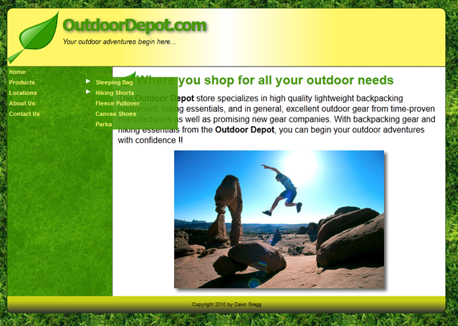

You have decided to make some modifications to your web site to utilize some of
the nav concepts that you learned this week. Rather than having your web site
users go to your product table page and then to your individual product
(services or event) details pages you want to place links to all of the pages in
the left page margin plus you want to allow for a time when you will have
separate pages for each of the locations referenced on your locations page. This
leads to a lot of links in your nav. You need to design a sliding nav system
in which hidden navs slide horizontally across the page to be revealed to the
user.
The nav system you will be designing allows navs to be displayed when the user clicks the nav title from the list of links. Menus should close whenever:
The navs should be created as create a series of nested unnumbered lists
containing the links. You'll have to take this structure into account when you
write your program.
Data files needed for this Assignment: linkhtml.txt, link.css, slidestxt.js, arrow.gif
Step 1: First copy your completed Assignment 8 and place it in a new folder (e.g. Assignment 9).
#linkList { width: 160px; float: left} , change the
width you used for your div with an id of nav
in your style2.css file. #linkList a {color: #FFF677; text-decoration: none},
change the color to the you used in the #nav a style in
your style1.css file. #linkList a:hover {color: #CAD217; }, change the
color to the you used in the #nav a:hover style in your
style1.css file. Step 2: Edit your index.html
<!--[if IE]>
<style type="text/css">
/* IE-specific styles to ensure list of links is rendered properly */
#linkList ul li {float: left; width:
100%}
#linkList ul li a {height: 1%}
</style>
<![endif]--><div id=nav>
to the ending </div> tag).Step 3: Open the slides.js file in your text editor.
Step 4: Add the makeMenus() function. The purpose of this function is to create a reference to all sliding navs in the document and to apply event handlers to objects in the document. Add the following commands to the function:
slideMenus.getElementsByTagName() method to store all of the elements in the
document in an array named allElems.slideMenu class into the
slideMenus array.slideMenus array and apply the
onclick
event handler to those objects to run the showSlide()
function. Also, for each
object in the slideMenus array, reference the first
ul element within that
object and set the value of the ul elements left style property to
0px. This
command moves all sliding navs (enclosed in unordered lists) to the far left of
the page.onclick event handlers to the elements with
ID values of
header and
content,
running the closeSlide() function.Step 5: Add the the showSlide() function to the file. The purpose of this function is to
display a sliding nav on the Web page.
slidelist that stores an object reference to the first
ul element nested within the current object (as referenced by the this keyword).Step 6: Add an if statement to the
showSlide() function. The purpose of the if
statement is to test whether a sliding nav is currently displayed on the page.
If the currentSlide object is not equal to null and the
ID of the currentSlide
is equal to the ID of the slidelist variable, then run the
closeSlide()
function; otherwise, do the following:
closeSlide() function.currentSlide variable equal to the slidelist variable.currentSlide variable to block.moveSlide() function repeated at intervals of 1 millisecond. Store
the ID of the timed function in timeID.Step 7: Add the closeSlide() function. The purpose of this function is to close any
active sliding nav.
currentSlide
variable is not equal
to null and then run the following commands:timeID variable.currentSlide object to
0px and set the display
style to none.currentSlide to null.Step 8: Add the moveSlide() function. The purpose of this function is to move a
sliding nav horizontally across the page until the left coordinate of the nav
exceeds the width you defined for your div with an id of
linkList in step 1 above (e.g. 160px).
Add the following commands to the function:
leftPos variable by 5.currentSlide object is less than or
equal to 220, then set the left style of that object to the coordinates
leftPospx where leftPos
is the value of the leftPos variable.timeID variable and
reset the value of the leftPos variable to 0px.Step 9: Save your changes to the slides.js file, and then open your the index.html page in your browser and the links from the list containing a white triangle and verify that clicking those titles results in a subnav containing additional links sliding across the page. Also, verify that you can close a nav by clicking another title, clicking the same title twice, or clicking elsewhere in the main body of the Web page:

Step 10: Submit all your html pages PLUS all your image, JavaScript and CSS files to eCollege so you can receive credit for this assignment. Place all files in a zip file.
.zip file on a Windows machine,
first select all of the files you want to add. Then, right-click the files,
select "Send To" and "Compressed (zipped) Folder"..zip file on a Mac,
Command-click (or Shift-click contiguous files) on all the files you want
included, then choose Create Archive of X Items from the Action nav.
{kind=link}